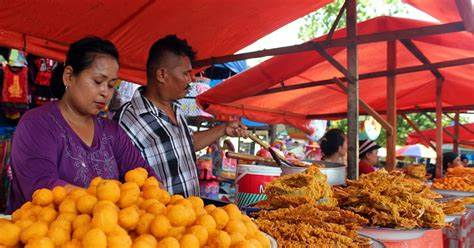
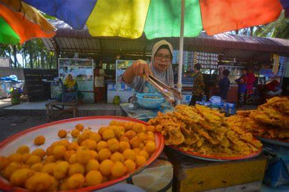
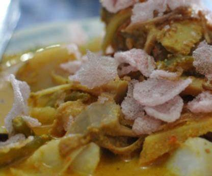
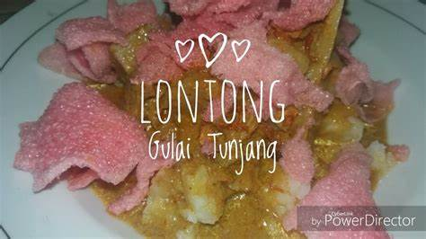
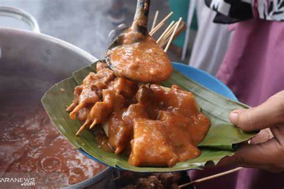
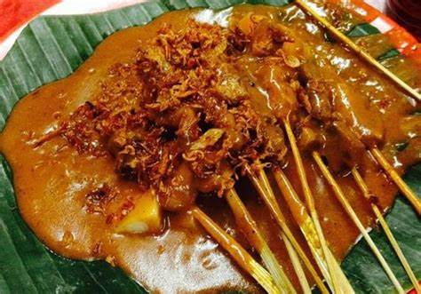
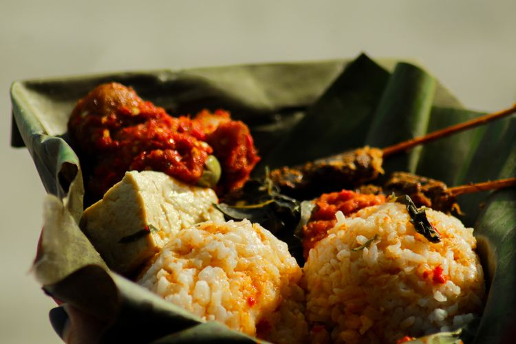

PANTAI PARIAMAN
PANTAI PARIAMAN


KULINER KHAS PARIAMAN PENUNJANG WISATA PANTAI PARIAMAN

Sala Lauak
Liburan ke Pariaman, cobalah icip-icip sala lauak. Camilan yang digoreng ini pas sekali untuk teman jalan-jalan di kota pesisir Sumatera Barat itu. Bila berwisata ke Kota Pariaman, Sumatra Barat tak hanya dapat menikmati keindahan wisata baharinya namun kita dbisa juga mencicipi kuliner khas daerah yang dikenal dengan budaya Tabuiknya. Salah satunya sala lauak yang begitu terkenal tidak hanya bagi masyarakat Minangkabau saja namun bagi pelancong mancanegara. ala lauak merupakan kuliner tradisional Minangkabau yang berupa gorengan. Biasanya menjadi camilan maupun pelengkap makanan yang memiliki bentuk seperti bola dan berwarna kuning kecoklatan atau coklat keemasan. Ukurannya dapat sebesar bola pimpong atau ukuran bola kelereng besar maupun berukuran kecil tergantung daerahnya.Kata sala dapat diartikan sebagai goreng. Istilah Miangkabau ini untuk berbagai jenis bahan makanan yang diolah dengan cara digoreng. Sedangkan, lauak berarti ikan.Bukan berarti sala lauak itu bermakna ikan goreng namun adonan yang terdapat ikan di dalalamnya dan dapat disajikan setelah digoreng.

Katupek Gulai Tunjang
Masakan yang terdiri dari tulang yang berisi sumsum dan tulang muda yang masih dibalut dengan daging dan kulit tersebut hanya dijual di Kecamatan Pariaman Selatan dan terpusat di Los Lambuang atau lambung di Pasar Kurai Taji, Pariaman Selatan. Setidaknya untuk hari biasa atau di luar bulan puasa kuliner tersebut dapat dinikmati selama 24 jam. Tidak heran Kota Pariaman dikenal dengan kuliner katupek gulai tunjang sehingga masakan khas minang tersebut telah menjadi sajian ikonik di daerah itu.  Harga yang dipatok pedagang untuk satu porsi gulai tunjang bervariasi sesuai dengan ukuran sehingga dapat menyesuaikan dengan isi kantong pembeli. Idrus menyebutkan harga katupek gulai tunjang yang dijualnya mulai dari Rp20 ribu untuk tunjang sapi, lalu untuk katupek gulai tunjang kerbau dijual dengan harga Rp26 ribu dan Rp29 ribu per porsi. Sedangkan gulai tunjang kerbau tanpa ketupat dijual dengan harga Rp45 ribu dan Rp60 ribu per porsi. Biasanya untuk gulai tunjang ukuran besar itu disantap oleh tiga sampai empat orang. Selain menjual katupek gulai tunjang, ia juga menjual katupek gulai kacuik atau kulit sapi dan kerbau dengan harga Rp13 ribu per porsi. 
Sate Pariaman
Sate piaman adalah sate berkuah merah yang terbuat dari tepung beras yang dicampur kaldu daging, cabe merah dan bahan–bahan lainnya. Selain berkuah merah, sate piaman memiliki cita rasa yang kuat, dan kuahnya yang kental. Hal tersebut membedakan sate piaman dengan jenis sate padang lainnya. Lain halnya dengan sate padang pariaman, jenis sate ini memiliki ciri khas kuah kental dan berwarna merah kecoklatan. Warna merah ini berasal dari kombinasi rempah dan cabai merah dalam jumlah banyak. Sehingga tidak hanya menghasilkan warna cerah, tetapi juga rasa yang cenderung pedas. Bila berkunjung ke Sumatera Barat, sate padang pariaman dapat dijumpai mulai dari daerah pesisir Pariaman hingga ke daerah Padang Pariaman. Cita rasa pedas sate padang pariaman nikmat disantap dengan kerupuk jangek ( kerupuk kulit sapi).